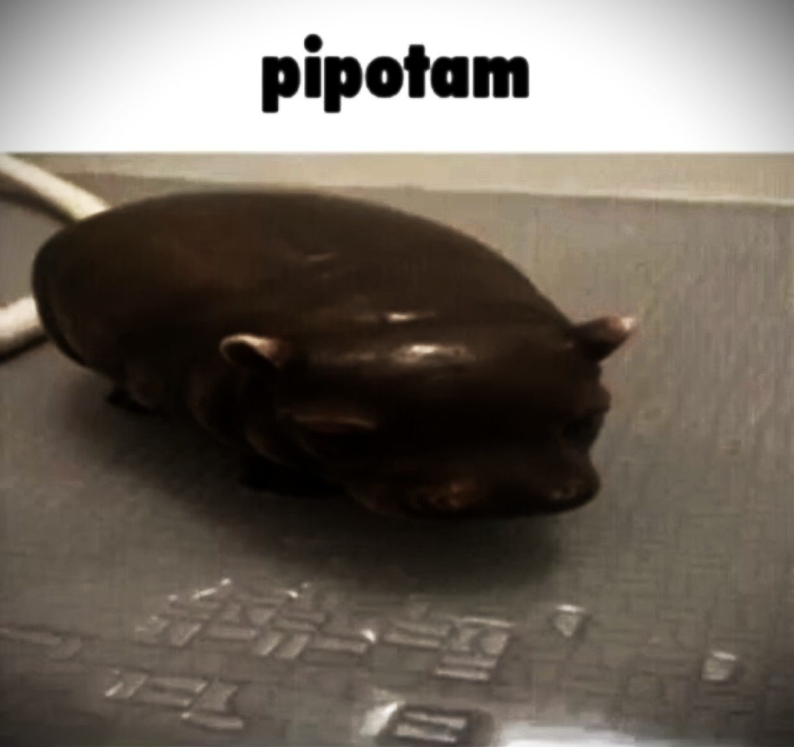

À propos de moi

Etudiante ingénieure en informatique, je me forme dans plusieurs domaines au sein de l'ENSSAT (Ecole Nationale Supérieure des Sciences Appliquées et de Technologie) tels que la cybersécurité, le génie logiciel, l'IA, les BDD.
Je me forme plus particulièrement en cybersécurité et en UX/UI design, domaines qui me passionnent.